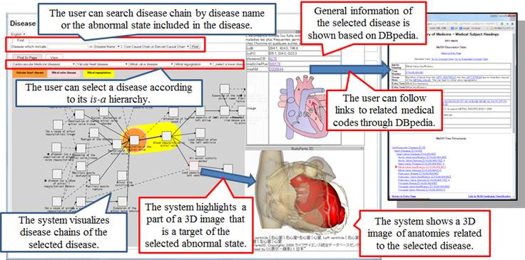
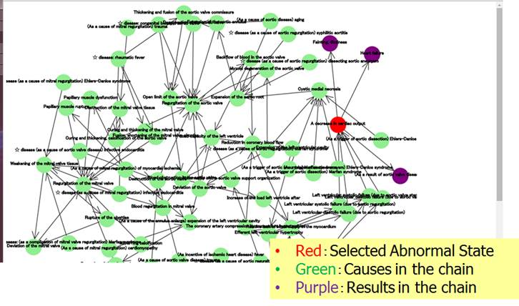

Disease Ontology (Disease Chain LOD)
[Japanese]
*contents on site are a part of research result supported by the
Japan Society for the Promotion of Science (JSPS) through its "FIRST
Program"" and the Ministry of Health, Labour and Welfare, Japan.
Disease
Compass
– A Navigation System for Disease Knowledge based on
Disease Ontology
[Run
the system] [Run the system on Internet Explorer]
This
system navigates the users through the following three kinds of contents;
1.
Definition of disease based on
the River Flow Model of disease
-
Navigating definitions of diseases based on
causal chains with links to other systems/datasets.
Examples) Mitral
stenosis
2.
General causal chains in a
human body
-
Browsing possible causal chains of abnormal
state (disorder) in human body.
Examples) heart
failure
3. Definition of abnormal state (clinical disorder)
-
Browsing is-a hierarchy
of abnormal state (clinical disorder) otology with mappings to other resources.
Examples) heart
failure

Navigating definitions of
diseases with links to other systems/datasets.

Browsing possible causal chains of abnormal state (disorder)
SPARQL Endpoint for Disease Ontology
[Run the
system]
Related
Resources
Contact: kozaki@ei.sanken.osaka-u.ac.jp
Last Update:2014/06/26